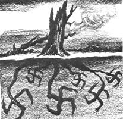

Entnazifizierung
- Säuberung von der nationalsozialistischer Ideologie in Politik, Kultur und Wirtschaft.
- sollte Kriegsverbrecher gerecht strafen
- erfolgte in den vier Besatzungszonen aufgrund politischer und ökonomischer Interessen auf unterschiedlicher Weise
Kontrallratsgesetz Nr.104
- März 1946 entfernt
- angeklagte Personen in fünf verschiedene Kategorien unterteilt, welche über das Strafmaß entschied
- Aufteilung in: Hauptschuldige, Nutznießer ( halfen im Krieg durch Waffenproduktion bzw. der Kriegsindustrie zur Kriegspolitik) Minderbelastete, Mitläufer und Entlastete
- Ziel: Ausschaltung aller NSDAP-Mitglieder als Intention der gemeinsamen Entnazifizierungspolitik)
Britische Zone
- nicht so intesiv wie in der amerikanischen Zone, vor allem schnelle Auswechslung der Eliten
- Skalensystem von 1-5 ; 1-2 schwere Fälle und 3-5
- leichte Fälle wurden an deutsche Spruchkammern übergeben
- Richter durften damals keine Mitglieder der NSDAP o.ä. Gewesen sein
- Drei Viertel der Angeklagten bestraft, häuptsächlich Internierungshaft
- nur 3,7 Prozent der Angeklagten mussten in Haft
- 4,5 Prozent mussten noch eine Geldstrafe zahlen
Amerikanische Zone
- Erstellten Fragebögen mit 131 Fragen, um den Statuas „mandatory removal“ (= entlassungspflichtig) zu definieren
- 5. März 1946 unterzeichneten die Ministerpräsidenten der im Rathaussaal München das „Gesetz zur Befreiung von Nationalsozialismus und Militarismus“
- Unter Aufsicht der US-amerikanischen Militärregierung (OMGUS) wurde ab 1947 eine neue Politik der Re-Education proklamiert, deren Ziel die Einbindung eines noch zu schaffenden freien deutschen Staates als westlicher Bündnispartner war
- 1948 Interesse der Amerikaner an einer strikten Entnazifizierung ging zurück, aufgrund des Kalten Kriegs
- Entnazifizierung sollte mit höherer Geschwindigkeit funktionieren
Französische Zone
- „Generell lässt sich sagen, dass die [...] Franzosen weniger streng verfuhren und sich, anstatt auch den letzten denkbaren Missetäter enttarnen zu wollen, mehr auf die 'schlimmsten Fälle' konzentrierten“
- entlastet war der, der nach dem 1. Januar 1919 geboren war
- Verordnung 165: Ab Juli 1948 wurden alle „einfachen Parteimitglieder“ als Mitläufer eingestuft
Sowjetische Zone
- war mit grundlegendem kommunistischen Umbau verbunden
- schnelle und konsequente Umsetzung
- Funktionsträger der NSDAP wurden in Speziallager interniert
- nationalsozialistische Funktionäre wussten, dass sie in den westlichen Ländern weniger zu befürchten hatten
- letzte Chance sich im Westen mit antikommunistischen Argumenten zu entlasten
- In Lagern der SBZ herrschten bis zur Auflösung 1950 unerträgliche Haftbedingungen, wodurch bis zu 80.000 Menschen starben
